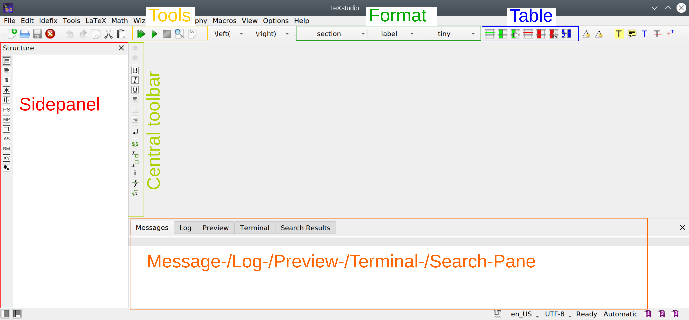
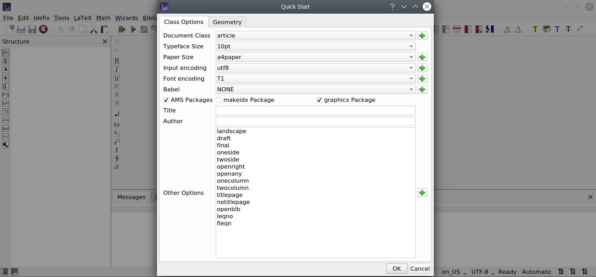
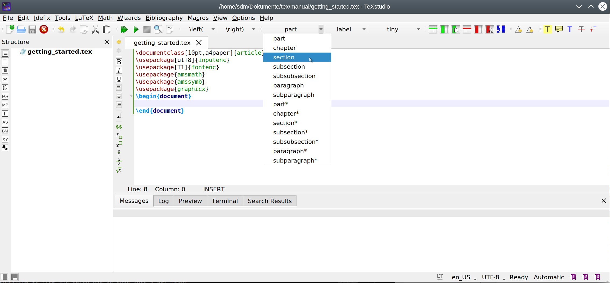
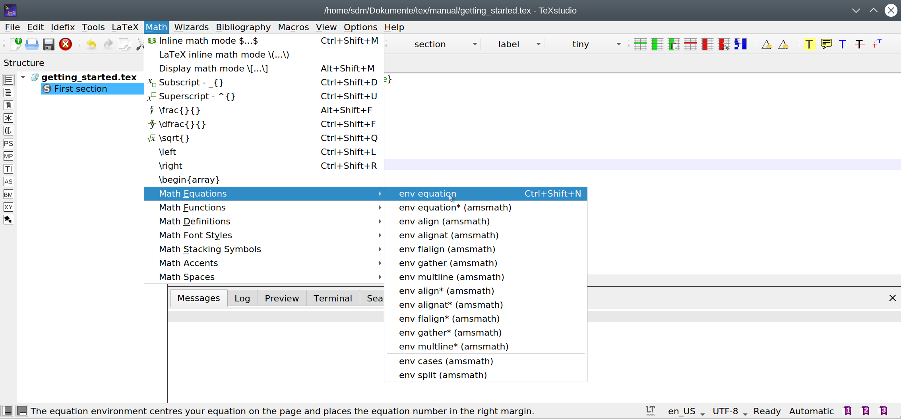
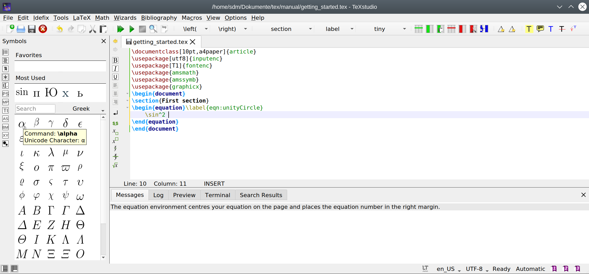
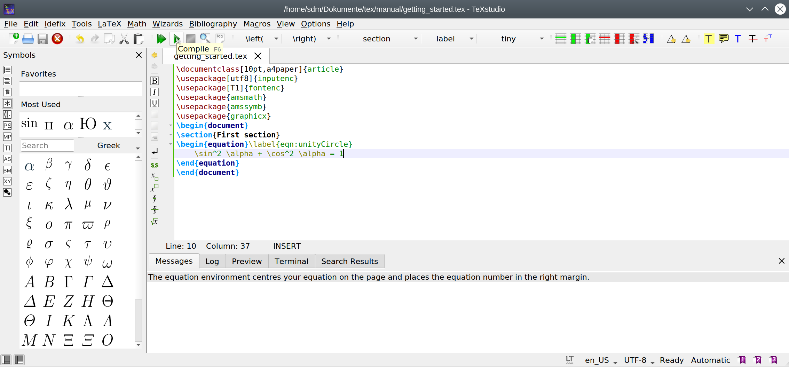
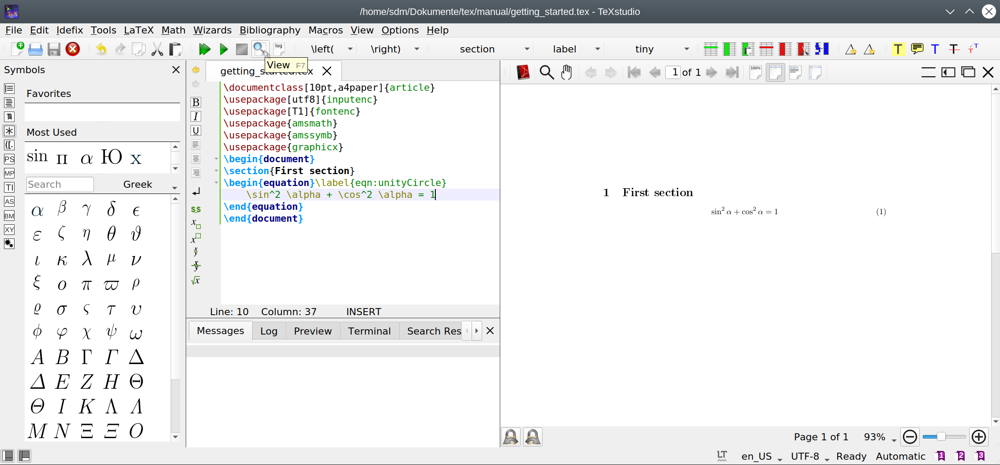

Getting started#
Requirements#
TeXstudio is a specialized LaTeX-editor. It helps to type LaTeX-documents more comfortable by helping to find the right commands, supporting error analysis and providing an easy way to view the results.
The actual latex system needs to be installed separately and is not provided by TeXstudio.
Here we assume that TeXstudio and a LaTeX-system are already installed on your system.
Start TeXstudio#

On the left we have the side panel which is currently showing an empty structure view. On the lower right you see the messages panel which can be switched to the log panel, the preview panel, or the search results panel. The toolbar allows easy access to some often needed functions, three of them are marked as we will use them soon. The central toolbar offers access to some common latex commands as we will see.
Create a first document#
LaTeX needs some configuartion code in the document. The Quick Start Wizard offers an easy way to set up a typical document.

Select Wizards/Quick Start... and confirm the dialog with OK.
This will lead to this basic document:
\documentclass[10pt,a4paper]{article}
\usepackage[utf8]{inputenc}
\usepackage[T1]{fontenc}
\usepackage{amsmath}
\usepackage{amssymb}
\usepackage{graphicx}
\begin{document}
\end{document}
We will not go over the content of the document in detail, that is for the LaTeX-tutorial, as our focus is the editor.
The file needs to be saved on the computer to be useful.
So next we click the save button (or use CTRL+S) and save it with a sensible name like “getting_started.tex”.
Fill in content#
Insert a section#
We can select \section from the section button in order to insert the section command and add a title text.

Insert an equation environment#
We can insert an equation environment via the menu Math/Math equations/env equation or by pressing CTRL+SHIFT+N

Insert symbols#
LaTeX offers a huge number of mathematical and other symbols. A convenient way of selecting the right one is using the symbol pane on the left side. Symbols can be declared as favorites and the most used symbols are collected as well to allow faster navigation.

Compile#
Compiling a document means translating it from the LaTeX source code into a pdf file.
This can be performed by clicking on the compile button or using the key F6.

This calls the actual LaTeX-system (pdflatex by default) to compile the document on the disk.
The Message Pane shows results from that run and will jump to the log-view in case of errors.
View your pdf document#
Now we like to see the results. For this, click the view button or press F7.

The pdf document is presented right of the text within TeXstudio.
You can scroll and zoom to examine the result.
CTRL+left click on text or images within the pdf will jump to the corresponding source code.
Pressing F7 or clicking the view button actually scrolls the pdf to same position in the document where the cursor is in the source document, see here for details.